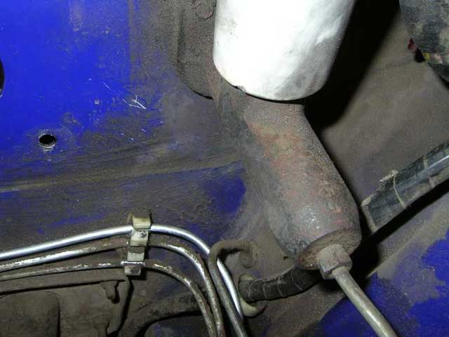

Описывается установка вакуумного усилителя тормозов и главного тормозного цилиндра Лукас.
Родной Ижовый вакуумник не отличается ни силой ни надёжностью. То же касается и ГТЦ. А тут такая редкая удача - можно с минимумом переделок установить качественные детали от известного производителя. Я не раздумывал, тормозов мало не бывает.
Поскольку на родном ГТЦ три дырки под тормозные трубки, а на Лукасе - только две, то придётся несколько изменить схему тормозов:
Как видно на схеме, трубка от ГТЦ к правому переднему колесу ликвидируется, и вместо неё прокладывается трубка от "паровозика" (правая передняя от классики).
Ниже приведён перечень необходимых для доработки деталей и запчастей:
Снял ГТЦ. Штуцера отмочил ВД-шкой, всё нормально открутилось, сломалась только трубка к переднему правому колесу, просто потому, что я её все равно собирался менять, и не жалел.
Снял ВУ.
Снял правую переднюю тормозную трубку.
Прикрутил проставку к ВУ Лукас. Штангелем измерил выступание штока на штатном ВУ и на ВУ Лукас, засёк, сколько отпиливать:
и отпилил:
Поставил более тонкую гайку:
В паровозик вместо заглушки вкрутил штуцер. Протянул новую трубку от правого колеса к штуцеру паровозика:
Болгаркой оттрихтовал ГЦС (с примерками, чтобы не отпилить лишнего):

И вкрячил ВУ:
При установке мне показалось, что я немного поджал ВУ, когда подсоединял педаль. Поэтому я снова снял ВУ, и отпилил вилку:
Потом стал прикручивать ГТЦ к ВУ, подглядывая в дырочку под штуцер. Показалось, что шток ВУ сдвигает поршень ГТЦ, то есть длинноват. Долго пытался отрегулировать ВУ, но не смог одновременно крутить гаечку и удерживать шток. Потом приложил снова ГТЦ к ВУ - стало нормально:-) Наверное я сначала как-то не так приложил.
Радостный, прикрутил ГТЦ к ВУ, ВУ к машине. И застрял на коротких трубочках от ГТЦ к паравозику. Что-то они никак у меня не прикручивались... Но после часа мучений я их одолел!
Вот такая вышла красота:
Расширительный бачок немного наклонил бачок ГТЦ. Эта проблема решается установкой расширительного бачка от "Волги" или от девятки. Бачок давно куплен, но до сих пор не инсталлирован. Лень-матушка:)
А тормозит Лукас просто прекрасно.
5 ноября 2006 г.